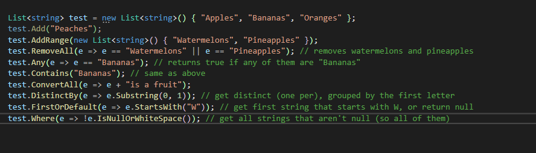
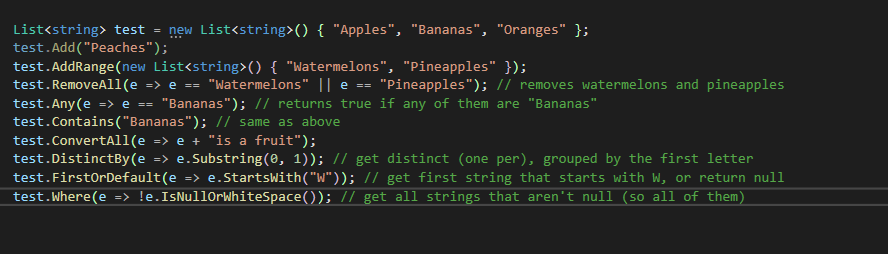
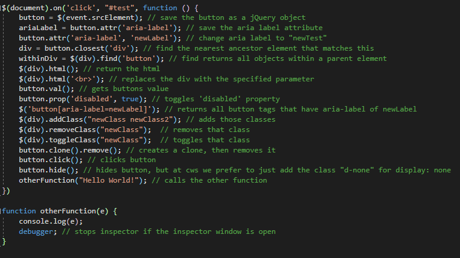
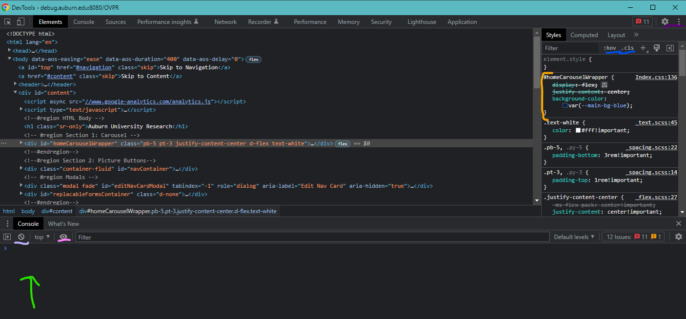
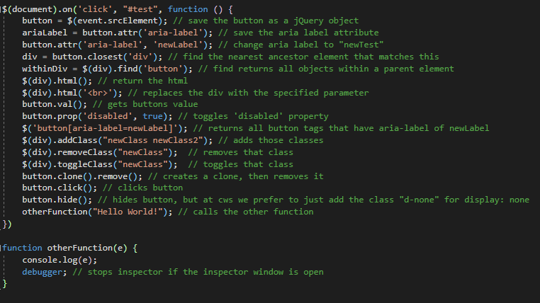
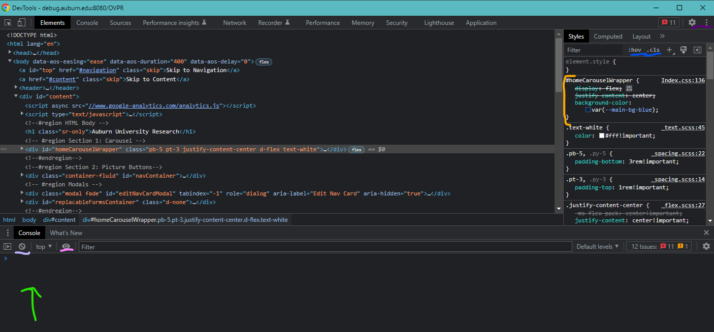

MVC
Our development is centered around the Model-View-Controller (MVC) pattern.
Model: This is the data. This could be tables in a database, classes that we make ourselves, or really anything that is designed to retain information for later use, whether that be updating it, deleting it, or just reading it. This is storage.Examples: tblPerson.cs, MyViewModel.cs
View: This is the .cshtml page that the user sees. It's called .cshtml because it is a C# HTML (we'll dive into these later) page, which uses Razor Markup. Think of it as the frontend. It's where HTML, CSS, and JS work together to create a page.Examples: Create.cshtml (and its components Create.css and Create.js)
Controller: The controller acts as a traffic hub for data, directing it where it needs to go. It's also where developers will write most of their C#, perform logic on data, manipulate data, and validate user responses. The controller is a C# class which inherits Controller, so do not go around thinking that JavaScript is the Controller. JavaScript is the ViewExamples: HomeController.cs, AdminController.cs
Model: This is the data. This could be tables in a database, classes that we make ourselves, or really anything that is designed to retain information for later use, whether that be updating it, deleting it, or just reading it. This is storage.
View: This is the .cshtml page that the user sees. It's called .cshtml because it is a C# HTML (we'll dive into these later) page, which uses Razor Markup. Think of it as the frontend. It's where HTML, CSS, and JS work together to create a page.
Controller: The controller acts as a traffic hub for data, directing it where it needs to go. It's also where developers will write most of their C#, perform logic on data, manipulate data, and validate user responses. The controller is a C# class which inherits Controller, so do not go around thinking that JavaScript is the Controller. JavaScript is the View
GitHub
We use GitHub as source control, or in other words, how we manage a bunch of people working on the same codebase at the same time.
There's a lot of terminology at first but once you get it, you'll see it's rather simple. A branch is a unique copy of the codebase, and branches
allow you to develop features, fix bugs, or safely experiment with new ideas in a contained area of your repository.
Think of any of our GitHub repositories as a hierarchy with the 'main'/'master' branch at the very top (this is always the branch that prod (production) looks at).
Most of the time, especially with projects that are being worked on heavily, there will be "Releases" planned, in which there will be a Release branch
(ex. Release_Fall2022 branch). We base our branches off the Release branch, and the Release branch is where we will eventually merge into.
Pull Request: When you're ready to send your code to someone for code review, you can hit CTRL+R or Branch -> Create pull request. Make sure you're merging into Release. In the comment, add anything you feel should be said but also paste the link to the Jira story. Make sure you add reviewer(s) and assign yourself (so you get notifications). If someone requests changes, you can fix those on your branch, push those changes, then click the circular icon next to their name under the reviewers list to rerequest their review.
Merging: Sometimes you need to merge Release into your branch. Switch to your branch first. You can hit CTRL+Shift+M or go to the branch menu and click the button at the bottom for Choose a branch to merge into <your branch name>... If everything is fine with the merge, it'll give you the option to push. If there are conflicts, click the dropdown next to each conflict and open it in either Visual Studio Code or Visual Studio (or something that will show you the conflicts in an easy-to-understand fashion). "Accept from incoming" means you're overwriting your code with someone from Release. "Accept from current" means you're going to use your own code over whatever's in Release.
Stash: If you right-click the "x changed files..." tab above your changed files, you can 'stash' them, which basically discards the changes but GitHub keeps track of those changes just in case you change your mind later. You can restore the stash.
Advanced GitHub: Some nice shortcuts are CTRL+Shift+N for a new branch, CTRL+R for pull request, and CTRL+Shift+M for merging into your branch. Also, if you have a pull request you can quickly get to your branch on the branches menu by clicking the 'pull requests' tab. You can click the "History" tab on the main GitHub desktop page to see the previous commits, and right clicking on any of them gives options for reverting, etc. You can hold Shift and select the top and bottom commits for a range, or hold CTRL and click for specific commits. Some options for you are:Revert: Reverses all changes from a commit
(batch) Cherry pick: You can take the changes from a specific commit (or many) and also apply it to a different branch.
(batch) Squash: Combine multiple commits into one. This is just to clean up the history.
How to Revert File(s) in your Branch to the File(s) from Release:open git command line in Visual Studio
type "git restore -s [Release_Fall2022] [Nursing/Nursing.Web/Views/Admin/Index.cshtml]
Pull Request: When you're ready to send your code to someone for code review, you can hit CTRL+R or Branch -> Create pull request. Make sure you're merging into Release. In the comment, add anything you feel should be said but also paste the link to the Jira story. Make sure you add reviewer(s) and assign yourself (so you get notifications). If someone requests changes, you can fix those on your branch, push those changes, then click the circular icon next to their name under the reviewers list to rerequest their review.
Merging: Sometimes you need to merge Release into your branch. Switch to your branch first. You can hit CTRL+Shift+M or go to the branch menu and click the button at the bottom for Choose a branch to merge into <your branch name>... If everything is fine with the merge, it'll give you the option to push. If there are conflicts, click the dropdown next to each conflict and open it in either Visual Studio Code or Visual Studio (or something that will show you the conflicts in an easy-to-understand fashion). "Accept from incoming" means you're overwriting your code with someone from Release. "Accept from current" means you're going to use your own code over whatever's in Release.
Stash: If you right-click the "x changed files..." tab above your changed files, you can 'stash' them, which basically discards the changes but GitHub keeps track of those changes just in case you change your mind later. You can restore the stash.
Advanced GitHub: Some nice shortcuts are CTRL+Shift+N for a new branch, CTRL+R for pull request, and CTRL+Shift+M for merging into your branch. Also, if you have a pull request you can quickly get to your branch on the branches menu by clicking the 'pull requests' tab. You can click the "History" tab on the main GitHub desktop page to see the previous commits, and right clicking on any of them gives options for reverting, etc. You can hold Shift and select the top and bottom commits for a range, or hold CTRL and click for specific commits. Some options for you are:
How to Revert File(s) in your Branch to the File(s) from Release:
C#
If you know Java, C# should come pretty naturally. Actually, C# with the addition of LINQ makes things a lot more intuitive.
LINQ adds features to C#, most importantly abilities to manipulate lists and filter with lambda expression. Example of a LINQ
statement:
db.tblActivities.Where(m => !m.bIsArchived).ToList();
The m is the lambda parameter, and its a stand-in for one tblActivity. db.tblActivities is a DbSet<tblActivity>, calling .Where means you are trying to only return tblActivity that match the follow lambda expression (!m.bIsArchived), and ToList() turns it into a list.
Some useful functions you can call on lists:

Also make sure you use foreach, while, etc. But try not to have nested loops.
By the way, if you want to log SQL statements as Entity Framework is running methods (such as Where, First, etc), then put this line above where you want the SQL to start logging:
dbo.Database.Log = s => System.Diagnostics.Debug.WriteLine(s);
Helpful Visual Studio Shortcuts:
Shift+Alt+W (inside a .cshtml, when highlighting an element) -> surround by div
CTRL+M+O - collapse all regions
CTRL+M+L - expand all regions
F12 - go to definition
CTRL+K+D - format whole document
CTRL+R+R - refactor, when a mouse cursor over a variable name
CTRL+D - duplicate line
CTRL+K+C - comment out line
CTRL+K+U - uncomment line
CTRL+C, CTRL+X, CTRL+V, etc. when not highlighting will just act on a specific line
db.tblActivities.Where(m => !m.bIsArchived).ToList();
The m is the lambda parameter, and its a stand-in for one tblActivity. db.tblActivities is a DbSet<tblActivity>, calling .Where means you are trying to only return tblActivity that match the follow lambda expression (!m.bIsArchived), and ToList() turns it into a list.
Some useful functions you can call on lists:

Also make sure you use foreach, while, etc. But try not to have nested loops.
By the way, if you want to log SQL statements as Entity Framework is running methods (such as Where, First, etc), then put this line above where you want the SQL to start logging:
dbo.Database.Log = s => System.Diagnostics.Debug.WriteLine(s);
Helpful Visual Studio Shortcuts:
JavaScript
The wizard. You have events, such as click, that when fired can reach a method within your own code if you define it.
Let's have a button with id="test". In jQuery, we would get this button using $('#test'). If it had class test, then $('.test')
would get all elements that have that class. Here are some examples of jQuery in action:

As for jQuery methods, there's also:.each : iterates through an array
target.before(someElement) : places someElement before target
target.after(someElement) : opposite of above
target.prepend(someElement) : adds someElement as the first child element of target
target.append(someElement) : adds someElement as the last child element of target
target.wrap(someElement) : wraps target with someElement (so target becomes a child of someElement)
target.before(someElement) : places someElement before target
Also, if you have JavaScript inside a .cshtml, you can extract that to its own Chrome Inspector debug window by adding:
//# sourceURL=test.js
As the first thing under that script tag. Then going to Inspect (F12 on google chrome) -> Sources -> pick the folder "no domain" and your file will be in there. You can set breakpoints by clicking to the left of the source. 
This is Chrome DevTools. I recommend looking up good shortcuts because knowing how to use this quickly is a lifesaver when working on bugs. First of all, the colors coding. From bottom left to top right:Green arrow is console. You can type things down here and press enter to evaluate.
The underline light purple clears the console.
The underlined pink adds watches, meaning you can see a variables value any time
The orange bar is where you can edit CSS.
The blue underline is clicking :hov to force states (focus, hover, these are mouse events), or clicking .cls to add or remove classes from an element (very helpful when trying to fix something with CSS).
By the way, clicking the arrows next to Layout will bring up something called "Event Listeners", which will show what is called in the javascript from your files that are associated with whatever element you have selected. (click "show ancestors" because sometimes the event will be attached to the document, like when we do document.on('click', '#test', function () {}), etc.)
In the top left, you have the select element (CTRL+Shift+C), or the responsive button next to, to make sure things are scaling with different screen sizes.
Also, when an element is selected in HTML, you can type $($0) in the console to make that object a jQuery object (and then manipulate it in the console if you want)
JavaScript is also where we control modals, toasts, etc. There's a lot to do with JavaScript, so make sure to read some good tutorials. Honestly, use https://www.w3schools.com/js/default.asp for JavaScript tutorials or really anything else.

As for jQuery methods, there's also:
Also, if you have JavaScript inside a .cshtml, you can extract that to its own Chrome Inspector debug window by adding:
//# sourceURL=test.js
As the first thing under that script tag. Then going to Inspect (F12 on google chrome) -> Sources -> pick the folder "no domain" and your file will be in there. You can set breakpoints by clicking to the left of the source. 
This is Chrome DevTools. I recommend looking up good shortcuts because knowing how to use this quickly is a lifesaver when working on bugs. First of all, the colors coding. From bottom left to top right:
JavaScript is also where we control modals, toasts, etc. There's a lot to do with JavaScript, so make sure to read some good tutorials. Honestly, use https://www.w3schools.com/js/default.asp for JavaScript tutorials or really anything else.